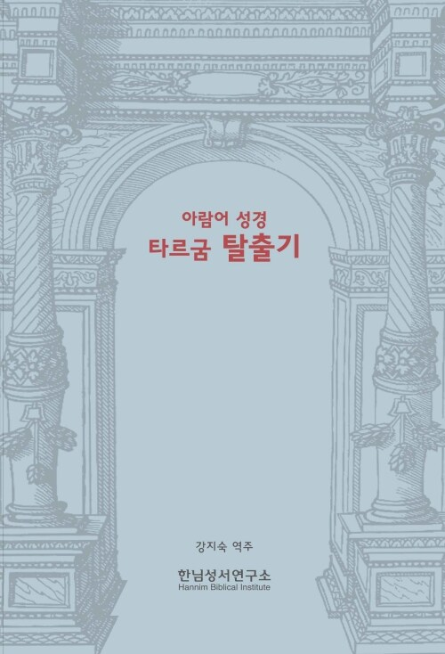

옹켈로스·차명 요나탄·네오피티, 탈출기의 세 타르굼을 나란히 담았다. 예수 시대 유대인이 성서를 어떻게 읽었는지 한국어로 만날 수 있는 거의 유일한 통로.

엠마오 · 신간 프리뷰
아람어 성경 타르굼 탈출기
- 출판사
- 한님성서연구소
- 출간
- 2026. 08. 20
- 쪽수
- 512쪽
- ISBN
- 9788994359632
- 분야
- 종교/역학 › 기독교(개신교) › 기독교(개신교) 목회/신학 › 설교/성경연구
정가 35,000원비북스 31,500원
주문 확인 후 보통 2–4일 안에 입고됩니다 (도매처 재고 기준). 매장 픽업 또는 택배
이 책을 추천한 글
1편 · 1명의 추천
'타르굼'은 히브리어를 더 이상 모국어로 사용하지 않게 된 유다인들이 회당 전례를 위해 만들어낸 아람어 성경 번역본이다. 히브리어 성경의 의미를 전달하기 위해 문자적 번역뿐 아니라 창의적 설명을 덧붙인 의역도 함께 사용되었으며, 중세 시대까지 오랜 세월 발전해 왔다.
『아람어 성경 타르굼 창세기』에 이어 '타르굼 옹켈로스', '타르굼 차명 요나탄', '타르굼 네오피티'의 탈출기 본문을 모두 번역했다. 이집트 탈출과 열 가지 재앙, 시나이 계약과 십계명, 성막 건립 등을 통해 예수님 시대와 그 이후 유다인들이 구약성경을 어떻게 이해하고 받아들였는지 살펴볼 수 있다.
- 감사의 글 5
- 일러두기 7
- 개요
- 타르굼의 의의 8
- 타르굼의 종류 11
- 세 타르굼의 탈출기 번역 비교 13
- 차명 요나탄의 부연/추가/확장 본문들의 특징 17
- 기타 세부적인 특징 27
- 타르굼 옹켈로스 탈출기 본문 번역과 각주 31
- 타르굼 차명 요나탄 탈출기 본문 번역 283
- 타르굼 네오피티 탈출기 본문 번역 397
- 부록
- 참고문헌 501
- 성경과 랍비 문헌 찾아보기 504